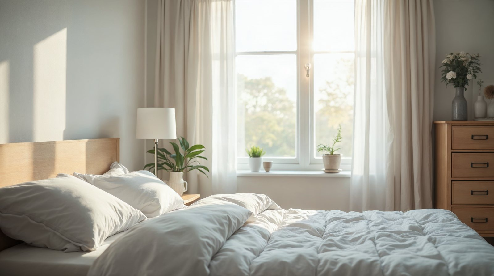
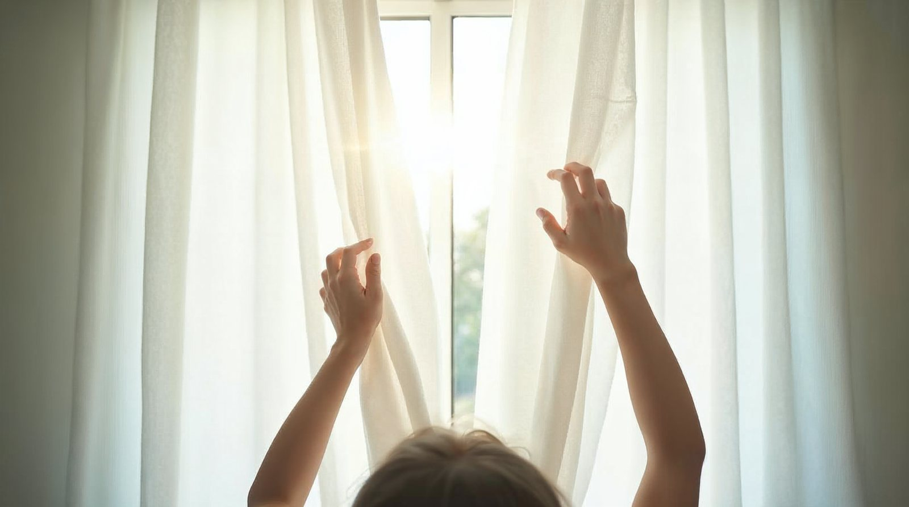
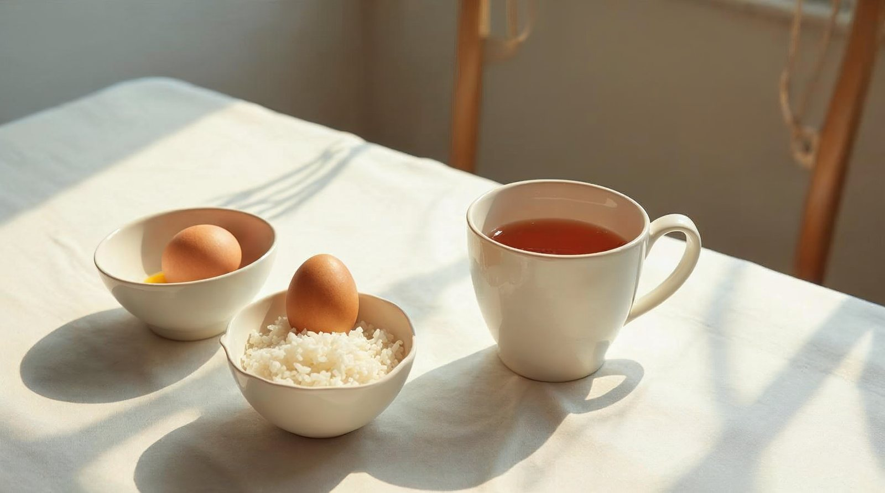
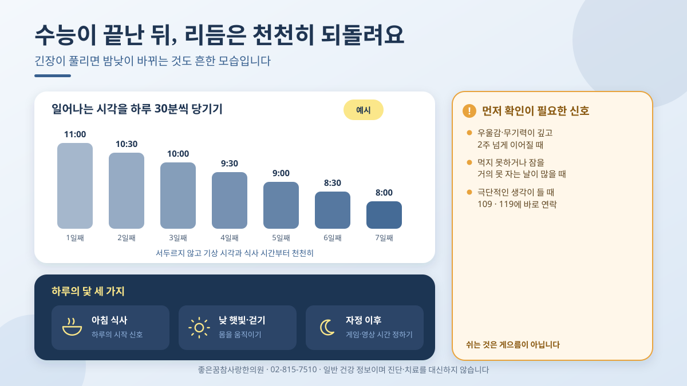

이종호 한의사 감수좋은꿈참사랑한의원 대표원장 (한의사 면허번호 19769)발행 2026-11-22 · 수정 2026-11-26
이 글의 차례
- 왜 이런 불편이 생길 수 있나요
- 시험 뒤 흔한 변화와 살펴봐야 할 변화는 어떻게 다른가요?
- 시험이 끝났는데 왜 몸살처럼 아플까요?
- 밥과 소화도 리듬의 일부예요
- 허전하고 걱정되는 마음은 어떻게 하나요?
- 얼마나 지켜보고, 언제 진료를 받을까요
- 예를 들면 이런 경우입니다
- 스스로 점검해 보세요
- 먼저 이렇게 여쭙니다
- 일상에서 먼저 해 볼 수 있는 것
- 게임과 영상은 끊어야 하나요?
- 하루 계획, 이렇게 시작해 보세요
- 바뀐 밤낮, 이렇게 되돌려 보세요
- 보호자께 드리는 부탁
- 한의원에서 함께 살필 수 있는 경우
- 처음 오시면 이렇게 살펴봅니다
- 이렇게 기록해 오시면 상담이 쉬워집니다
- 이런 증상은 먼저 확인이 필요합니다
몇 달 동안 이어진 긴장이 끝나면 오히려 잠이 이상해졌다는 학생이 많습니다. 밤낮이 바뀌거나 반대로 잠이 오지 않는 것도 흔한 모습입니다. 서둘러 바로잡기보다 기상 시각과 식사 시간부터 천천히 되돌리는 것이 무리가 없습니다.
시험이 끝나고 오는 보호자께서 이런 말씀을 자주 하세요. "원장님, 시험 끝나면 푹 잘 줄 알았는데 오히려 새벽 네 시에 자요." 원래 그래요. 몇 달 동안 팽팽하게 당겨져 있던 고무줄을 갑자기 놓으면 제자리로 바로 돌아오지 않고 한동안 흔들리잖아요. 몸도 그런 거예요.
그러니까 사실은 지금 흐트러진 리듬은 고장이 아니라 긴장이 풀리면서 생기는 자연스러운 흔들림인 경우가 많아요. 그래서 저는 겁먹으실 필요 없다고 먼저 말씀드리고, 대신 이 흔들림이 너무 길어지지 않게 같이 잡아 보자고 해요.
왜 이런 불편이 생길 수 있나요
- 오래 긴장한 몸이 갑자기 풀리면 피로가 한꺼번에 몰려 낮에 졸리고 밤에 깨어 있기 쉽습니다.
- 정해진 일과가 사라지면 기상 시각이 흔들리고 그에 따라 밤잠도 밀립니다.
- 밤늦게까지 게임이나 영상을 보면 밝은 화면과 흥분이 잠드는 시각을 늦춥니다.
- 결과에 대한 걱정이나 허전함이 남아 누우면 생각이 많아지기도 합니다.
- 늦게 일어나 아침까지 거르면 하루 리듬의 시작 신호가 약해져 밤잠도 함께 늦어지곤 합니다.
여기서 두 가지를 나눠서 보셔야 해요. 푹 쉬는 것과 리듬이 무너진 것은 다른 얘기예요. 며칠 늦잠 자고 친구들 만나고 하고 싶던 걸 하는 건 쉬는 거예요. 그런데 밤낮이 완전히 바뀌어 낮에는 멍하고 밤에는 말똥말똥한 날이 한두 주 넘게 이어진다면, 그건 리듬이 무너진 쪽에 가까워요.
왜인 줄 아세요? 우리 몸에는 위기 때 켜지는 신경이 있어요. 옛날에 사자나 호랑이를 만나면 바로 도망칠 수 있게 몸을 깨워 두는 장치죠. 시험을 앞둔 몇 달 동안은 이게 계속 켜져 있었던 거예요. 시험이 끝났다고 이 스위치가 바로 꺼지지 않아서, 피곤한데도 잠이 안 오는 이상한 상태가 생기기도 하는 거예요.
또 하나는 일과가 사라졌다는 거예요. 학교와 학원 시간표가 몸의 시계를 대신 맞춰 주고 있었는데, 그게 갑자기 없어지니까 몸이 기준을 잃는 거죠. 그래서 지금은 스스로 기준 하나를 다시 세워 주는 게 필요해요.
그렇다고 시험 끝난 학생에게 다시 꽉 짜인 시간표를 들이밀 필요는 없어요. 몇 달 동안 쉬지 못한 몸에는 쉬는 시간이 꼭 필요하거든요. 쉬는 건 그대로 두되, 일어나는 시각과 밥 먹는 시각 정도만 기둥처럼 세워 두자는 거예요. 기둥이 서 있으면 그 사이를 어떻게 채우든 리듬은 크게 무너지지 않아요.
시험 뒤 흔한 변화와 살펴봐야 할 변화는 어떻게 다른가요?
시험 뒤에 흔히 보이는 모습은 이런 거예요.
- 며칠 동안 늦잠을 자고 낮에도 졸린 것
- 몸살처럼 온몸이 쑤시고 기운이 없는 것
- 해방감과 함께 묘하게 허전한 마음이 드는 것
- 그동안 못 했던 게임이나 영상에 한동안 빠지는 것
이런 변화는 대개 한두 주 안에 조금씩 자리를 찾는 경우가 많아요. 반면 아래 같은 모습은 조금 더 주의 깊게 봐 주세요.
- 2주가 넘도록 방 밖으로 잘 나오지 않고 친구 연락도 피하는 경우
- 입맛이 크게 줄거나 반대로 밤마다 폭식하는 경우
- 결과 이야기만 나오면 자신을 심하게 탓하는 말을 하는 경우
- 잠을 충분히 자도 낮 내내 졸리고 코를 심하게 곤다는 말을 듣는 경우
이런 경우라면 생활 리듬만이 아니라 마음 상태와 몸 상태를 함께 확인해 보시는 게 좋아요.
시험이 끝났는데 왜 몸살처럼 아플까요?
시험이 끝나고 나서 몸이 쑤시고 목이 칼칼하다는 학생이 꽤 있어요. 긴장하고 있을 때는 몸이 아픈 걸 뒤로 미뤄 두는 경우가 있거든요. 그러다 긴장이 풀리는 순간 그동안 쌓인 피로가 한꺼번에 느껴지는 거예요.
책상 앞에 오래 앉아 있던 자세 때문에 목과 등, 허리가 굳어 있던 것도 이때 드러나요. 그래서 저는 이 시기에 오시면 잠만이 아니라 굳어 있는 몸도 함께 살펴봐요. 다만 열이 나거나 기침이 심하다면 감기 같은 다른 원인을 먼저 확인해 주세요.
밥과 소화도 리듬의 일부예요
늦게 일어나면 아침을 거르고, 점심을 오후 세 시에 먹고, 밤에 배가 고파 야식을 찾게 돼요. 이렇게 식사가 밀리면 몸은 언제 하루가 시작되는지를 더 헷갈려해요. 밥 먹는 시각도 몸의 시계를 맞추는 신호거든요.
그러니까 사실은 아침밥을 거창하게 차릴 필요는 없어요. 일어나서 한두 시간 안에 따뜻한 국이나 밥 몇 숟가락이라도 드시는 게 중요해요. 그리고 밤늦게 먹는 건 조금씩 줄여 보세요. 늦은 밤에 먹으면 속이 더부룩해 잠이 얕아지는 경우가 많아요.
시험 기간 내내 소화가 잘 안 되고 속이 쓰렸던 학생이라면 그 흐름이 시험 뒤에도 이어지는지 함께 여쭤봐요. 긴장이 길었던 몸은 위장에도 흔적을 남기는 경우가 있거든요.
허전하고 걱정되는 마음은 어떻게 하나요?
목표가 사라진 뒤 마음이 텅 빈 것 같다는 학생이 많아요. 그것도 원래 그래요. 몇 달 동안 한 곳만 보고 달려왔으니까요. 이럴 때는 작은 일 하나를 정해서 해 보는 게 도움이 돼요. 보고 싶던 책 한 권, 배워 보고 싶던 것 하나처럼요.
결과에 대한 걱정이 밤마다 떠오른다면 낮에 걱정하는 시간을 따로 정해 보세요. 오후에 10분쯤 걱정되는 걸 종이에 적고, 밤에 다시 떠오르면 "그건 내일 그 시간에 생각하자"고 넘기는 거예요. 처음엔 어색해도 하다 보면 밤이 조금씩 조용해지는 경우가 많아요.
얼마나 지켜보고, 언제 진료를 받을까요
일어나는 시각과 식사, 낮 활동을 바꾸면서 2주쯤 지켜보세요. 그래도 밤낮이 돌아오지 않거나, 자고 나도 계속 몸이 무겁고 기분이 가라앉는다면 혼자 애쓰지 마시고 진료를 받아 보세요.
특히 시험 전부터 잠이 얕고 소화가 안 좋았던 학생이라면, 지금이 몸을 한번 정리해 볼 좋은 때일 수 있어요. 다음 학기나 새 출발 전에 몸부터 챙겨 두는 거예요.
예를 들면 이런 경우입니다
- 예를 들어 새벽까지 게임을 하고 오후 두세 시에 일어나는 경우라면, 갑자기 아침 일곱 시에 깨우기보다 일어나는 시각을 하루 30분씩 당겨 일주일쯤 걸려 되돌리는 거예요.
- 예를 들어 시험이 끝나자마자 아르바이트를 시작해 생활이 오히려 더 바빠진 경우라면, 근무 시간에 맞춰 잠드는 시각과 식사 시각을 먼저 고정해요.
- 예를 들어 결과 발표를 기다리며 밤마다 휴대전화로 정보를 찾아보는 경우라면, 찾아보는 시간을 낮으로 옮기고 잠들기 전에는 내려놓도록 약속해 보는 거예요.
스스로 점검해 보세요
- 일어나는 시각이 시험 전보다 세 시간 넘게 늦어졌다
- 하루 한 끼 이상을 거르는 날이 많다
- 잠들기 직전까지 휴대전화나 게임 화면을 본다
- 낮에 바깥에 나가지 않는 날이 일주일에 사흘 이상이다
- 누우면 결과나 앞날 생각이 꼬리를 문다
- 몸이 무겁고 어깨와 목이 늘 뻐근하다
- 기분이 가라앉는 날이 점점 늘고 있다
해당하는 항목이 여럿이라면 진료 때 표시해서 가져와 주세요.

먼저 이렇게 여쭙니다
- 시험이 끝난 뒤 자는 시각과 일어나는 시각이 어떻게 달라졌나요?
- 밤에 게임이나 휴대전화를 오래 보게 되었나요?
- 식사 시간이 불규칙해지고 입맛에 변화가 있나요?
- 마음이 허전하거나 걱정이 이어지는 날이 있나요?
- 낮잠을 자고 있다면 몇 시에 얼마나 자나요?

일상에서 먼저 해 볼 수 있는 것
- 일어나는 시각을 하루 30분씩 당기며 천천히 되돌리기
- 아침 식사를 챙겨 하루의 시작 신호로 삼기
- 낮에 햇빛을 보며 걷거나 몸을 움직이기
- 게임과 영상은 끝낼 시각을 미리 정해 자정을 넘기지 않기
- 쉬는 것을 게으름으로 여기지 않고 충분히 쉬어도 된다고 말해 주기
숙제는 하나만 드릴게요. 일어나는 시각만 정해서 지켜 주세요. 잠드는 시각은 처음엔 들쭉날쭉해도 괜찮아요. 아침이 자리를 잡으면 밤 졸음도 따라오는 경우가 많거든요. 딴 건 지금처럼 편하게 하셔도 돼요.
게임과 영상은 끊어야 하나요?
끊으라는 게 아니에요. 몇 달 동안 참아 온 걸 하고 싶은 건 당연한 거예요. 하고 싶은 걸 못 하게 하면 오히려 더 숨어서 하게 되거든요. 대신 언제 끝낼지를 미리 정하는 거예요.
밤늦게 화면을 보면 밝은 빛과 흥분이 몸을 깨워 두기 때문에 잠드는 시각이 계속 밀려요. 그래서 게임은 낮이나 이른 저녁에 실컷 하고, 자정 전에는 끝내는 걸 목표로 해 보세요. 끝낸 뒤에는 휴대전화를 침대에서 손이 닿지 않는 곳에 두면 도움이 돼요.
하루 계획, 이렇게 시작해 보세요
처음부터 빽빽한 계획을 세우면 지키기 어려워요. 하루에 꼭 하는 일 세 가지만 정해 보세요.
- 정한 시각에 일어나 커튼 열기
- 아침이든 점심이든 하루 한 끼는 가족과 같은 시간에 먹기
- 해 있을 때 30분 정도 밖에서 걷거나 움직이기
이 세 가지만 지켜도 하루의 뼈대가 생겨요. 나머지는 하고 싶은 대로 채워도 괜찮아요. 운동도 세게 할 필요는 없어요. 천천히 오래 걷는 게 지금 몸에는 더 맞는 경우가 많아요.
낮에 몸을 쓰는 것도 잊지 마세요. 공부하는 동안은 하루 대부분을 앉아서 보냈잖아요. 해 있을 때 밖에서 걷고, 친구를 만나러 나가고, 가벼운 운동을 하는 것만으로도 밤에 잠이 찾아오는 힘이 생겨요. 낮에 몸을 써야 밤에 몸이 쉬고 싶어 하거든요.
바뀐 밤낮, 이렇게 되돌려 보세요
밤낮이 완전히 바뀌었다면 하루 만에 되돌리려 하지 마세요. 갑자기 당기면 오히려 밤에 더 잠이 안 와서 다음 날이 더 힘들어지거든요. 최대한 천천히 가는 게 오히려 빨라요.
- 처음 며칠은 지금 일어나는 시각에서 30분만 당겨 일어나기
- 일어나자마자 커튼을 열고 창가에서 빛 보기
- 낮잠이 쏟아지면 이른 오후에 20~30분만 자기
- 졸리지 않은데 억지로 일찍 눕지 말고, 졸릴 때 눕기
- 일주일쯤 걸려 목표한 기상 시각에 닿으면 그 시각을 주말에도 비슷하게 지키기
잠자는 방도 한번 살펴 주세요. 방이 너무 밝거나 덥고, 침대 옆에서 휴대전화 알림이 계속 울리면 깊이 잠들기 어려워요. 잘 때는 방을 어둡게, 조금 서늘하게 해 두시는 게 좋아요.
보호자께 드리는 부탁
이 시기엔 보호자 마음도 복잡하시죠. 그래도 몇 가지만 부탁드릴게요.
- "언제까지 그러고 있을래" 같은 말보다 "같이 아침 먹자"처럼 함께할 일을 제안해 주세요.
- 결과 이야기는 아이가 먼저 꺼낼 때까지 기다려 주세요.
- 늦잠을 한두 번 잤다고 혼내기보다 일어나는 시각을 같이 정해 주세요.
- 아이가 힘들다고 말하면 해결책보다 먼저 들어 주세요.
몇 달 동안 버틴 것 자체가 큰일이었어요. 그 수고를 먼저 알아주시는 것만으로도 아이 마음이 한결 가벼워지는 경우가 많아요.

한의원에서 함께 살필 수 있는 경우
- 밤낮이 바뀌어 아침에 일어나기 힘든 경우 잠의 시간대와 하루 리듬을 함께 살핍니다.
- 자고 나도 개운하지 않고 몸이 무겁다면 잠의 깊이와 근육의 긴장을 봅니다.
- 입맛이 줄고 소화가 더디면 식사 시간과 소화 상태를 여쭙니다.
- 오래 앉아 공부한 뒤 목과 등, 허리가 뻐근하게 굳어 있다면 자세와 근육의 긴장을 함께 살핍니다.
- 누우면 생각이 많아져 잠들기까지 오래 걸린다면 저녁 시간을 보내는 모습과 마음의 긴장을 함께 여쭙니다.
좋은꿈참사랑한의원에서는 학생과 보호자의 이야기를 함께 듣되 학생이 직접 이야기할 시간을 충분히 두고, 진맥을 기본으로 하고 필요하다고 판단될 때 설진을 더해 몸 상태를 살핀 뒤 침이나 한약 상담 등 방법을 상태에 맞춰 정합니다.
처음 오시면 이렇게 살펴봅니다
모든 분의 맥을 먼저 짚고 시작해요. 학생에게도 무엇을 하는지 먼저 설명하고 천천히 진행해요. 그다음 학생 본인에게 잠드는 시각과 일어나는 시각, 입맛과 소화, 요즘 기분을 직접 여쭤봐요.
보호자께는 시험 전후로 달라진 생활과 집에서 보신 모습을 따로 여쭙고요. 필요하다고 판단되면 혀를 보는 설진을 더하고, 목과 어깨가 얼마나 굳어 있는지도 손으로 확인해요.
침이 무섭다는 학생에게는 억지로 하지 않아요. 한약을 생각할 때는 지금 먹는 약과 건강식품을 먼저 확인하고, 먹다가 속이 불편하면 복용을 멈추고 연락 주시도록 안내해요. 보통은 한 달쯤 지켜보고 다시 판단하는 경우가 많아요.
아픈 데만 보는 게 아니라 몸 전체를 보려는 거예요. 잠이 흔들리는 학생은 목과 어깨가 굳어 있거나 소화가 더딘 경우가 많아서, 그런 부분이 있으면 침으로 긴장을 살피기도 하고 필요하면 한약 상담을 함께 이야기해요. 무엇을 할지는 학생과 보호자께 이유를 먼저 설명드리고 같이 정해요.
이렇게 기록해 오시면 상담이 쉬워집니다
- 시험 전후의 잠든 시각과 일어난 시각
- 하루 게임·영상 시간
- 식사를 거른 날과 입맛
- 기분이 특히 가라앉았던 날
- 잠들기 전 마지막으로 한 일
기록은 학생이 직접 하면 가장 좋지만, 어렵다면 보호자가 아침에 한 줄만 적어 주셔도 충분해요. 일어난 시각과 기분을 '좋음, 보통, 가라앉음' 정도로만 적어도 2주쯤 모이면 흐름이 보이는 경우가 많거든요.
이런 증상은 먼저 확인이 필요합니다
- 먹지 못하거나 잠을 거의 자지 못하는 날이 많은 경우
- 우울감이 깊게 2주 넘게 이어지거나 스스로를 해칠 생각이 드는 경우(☎ 109로 바로 연락하세요)
이런 신호가 있으면 한의원보다 가까운 병원이나 응급실을 먼저 찾으세요.
시험이 끝난 지금은 몸과 마음이 다음 걸음을 준비하는 시간이에요. 서두르지 않아도 괜찮아요. 아침 하나부터 같이 잡아 봐요. 궁금한 건 학생도 보호자도 편하게 물어보세요.

여쭙는 것
- 시험이 끝난 뒤 자는 시각과 일어나는 시각이 어떻게 달라졌나요?
- 밤에 게임이나 휴대전화를 오래 보게 되었나요?
- 식사 시간이 불규칙해지고 입맛에 변화가 있나요?
생활에서 해 볼 것
- 일어나는 시각을 하루 30분씩 당기며 천천히 되돌리기
- 아침 식사를 챙겨 하루의 시작 신호로 삼기
- 낮에 햇빛을 보며 걷거나 몸을 움직이기
한의원에서 함께 살필 것
- 밤낮이 바뀌어 아침에 일어나기 힘든 경우 잠의 시간대와 하루 리듬을 함께 살핍니다.
- 자고 나도 개운하지 않고 몸이 무겁다면 잠의 깊이와 근육의 긴장을 봅니다.
- 입맛이 줄고 소화가 더디면 식사 시간과 소화 상태를 여쭙니다.
먼저 확인이 필요한 신호
- 먹지 못하거나 잠을 거의 자지 못하는 날이 많은 경우
- 우울감이 깊게 2주 넘게 이어지거나 스스로를 해칠 생각이 드는 경우(109로 바로…
한눈에 보는 표
| 구분 | 핵심 |
|---|---|
| 여쭙는 것 | 시험이 끝난 뒤 자는 시각과 일어나는 시각이 어떻게 달라졌나요? 밤에 게임이나 휴대전화를 오래 보게 되었나요? |
| 생활에서 해 볼 것 | 일어나는 시각을 하루 30분씩 당기며 천천히 되돌리기 아침 식사를 챙겨 하루의 시작 신호로 삼기 |
| 한의원에서 함께 살필 것 | 밤낮이 바뀌어 아침에 일어나기 힘든 경우 잠의 시간대와 하루 리듬을 함께 살핍니다. 자고 나도 개운하지 않고 몸이 무겁다면 잠의 깊이와 근육의 긴장을 봅니다. |
| 먼저 확인이 필요한 신호 | 먹지 못하거나 잠을 거의 자지 못하는 날이 많은 경우 우울감이 깊게 2주 넘게 이어지거나 스스로를 해칠 생각이 드는 경우(109로 바로 연락하세요) |
자주 묻는 질문
한동안 늦잠을 자도 괜찮은가요?
며칠은 괜찮지만 길어지면 되돌리기 어려워질 수 있어 일어나는 시각을 조금씩 당기는 방법을 권합니다.
결과가 걱정되어 잠이 오지 않아요.
걱정이 큰 시기에는 흔한 일입니다. 낮에 걱정을 적는 시간을 따로 정해 두고, 밤에는 쉬는 데 집중해 보세요.
보호자만 먼저 상담해도 되나요?
상태를 직접 살펴야 해서 학생과 함께 오시길 권합니다. 오기 어려우면 전화(02-815-7510)로 먼저 문의해 주세요.
시험이 끝나고 몸살처럼 아픈 것도 흔한가요?
긴장이 풀리며 피로가 한꺼번에 느껴지는 경우가 있습니다. 열이 나거나 며칠 넘게 이어지면 감기 같은 다른 원인이 없는지 병원 진료를 받아 보세요.
시험 끝나고 바로 운동을 시작해도 되나요?
좋습니다. 다만 처음부터 세게 하기보다 걷기처럼 가벼운 운동을 해 있을 때 꾸준히 하는 쪽을 권합니다. 밤늦은 격한 운동은 잠드는 시각을 늦출 수 있습니다.
좋은꿈참사랑한의원은 재진 때 지난번 이야기부터 이어서 여쭙니다. 진료시간과 예약은 오시는 길에서 확인하세요.
어디서 상담받을 수 있나요?
좋은꿈참사랑한의원은 서울 동작구 만양로2길 2 신성빌딩 3층·5층(서울 동작구 상도동, 7호선 상도역 3번 출구 근처)에 있습니다. 한의사 3명(이종호 대표원장, 조영기 수석진료원장, 정원영 진료원장)이 진료합니다. 진료시간은 평일 09:30~20:00(점심 13:00~14:00), 토·일·공휴일 09:30~15:00이며, 방문 전 전화로 확인을 권합니다. 예약은 네이버 예약, 카카오톡 상담, 전화 02-815-7510로 받습니다.
이 글은 일반적인 건강 정보이며 개인의 진단이나 치료를 대신하지 않습니다. 증상이 있거나 복용 중인 약이 있다면 진료를 통해 확인하세요. 치료 효과는 개인마다 다를 수 있습니다.
작성 기준: 일반적으로 알려져 있는 건강 정보를 참고해 정리했습니다(대표원장 감수). 증상 기록은 1~2주 동안 하루 1회, 비슷한 시간에 적어 오시면 지난 상태와 비교하기 쉽습니다.